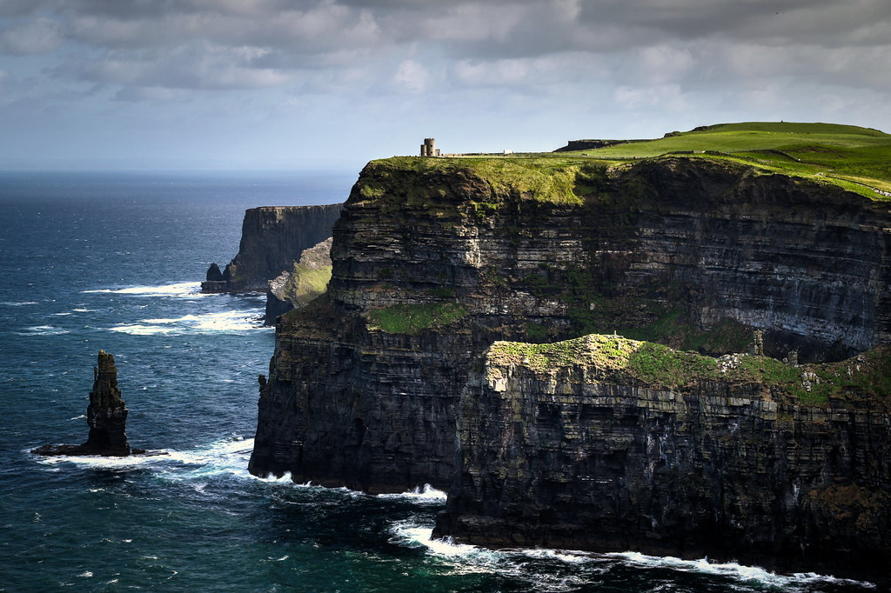

About Me

Dia dhuit, is mise Sarah! (Gaelic for "Hi, my name is Sarah!") Welcome to my digital travel log documenting my study abroad adventure in Ireland! Come along with me to journey through the bustling streets of Dublin, the historic towns of Glendalough and Kilkenny, the vibrant city of Galway, the breathtaking Cliffs of Moher, and Northern Ireland.
Gallery


